Preferences in general changes settings for any future documents. It will be available whether or not you have any documents open. The following descriptions will primarily apply to Preferences, but we will point out differences compared with Document Setup as we go.
You may have started up Scribus in a particular Language – here we expect to see the system default language, but you can override that setting, which will remain on future startups until you change again.
The Theme will be whatever your main system theme is when none is selected, but otherwise your choices depend on your operating system and its themes. You can also change Scribus fonts as seen here. The various other settings are straightforward, and experimentation will be your guide.
The various Paths are the default locations Scribus will use for these operations. The path for Scripts is where Scribus looks when you choose Scripts > Execute Script from the menu.
|
 |  Here is an example of Double Sided, Right Page as the first (also happens to be two-column). If you print these on a local printer, they will print as individual pages. |
Preset Layouts will be available for anything other than Single Page layout. What these represent are some time-honored ways to set the margins of the page, many based on some mathematical approach related to the dimensions of the page. Below we see the contrast of these various methods – these are all right pages of a double-sided layout.
 Gutenberg |  Magazine |  Fibonacci |  Golden Mean |  Nine Parts |
Although labeled Guides, there are many other settings here, mostly related. Guides can either show above or below your content. Snapping: Snap Distance applies when Page > Snap to Guides or Page > Snap to Grid has been selected. Grab Radius has to do with the size of the virtual space for grabbing and dragging a frame's handles. As the tooltips indicate, you must shut down and restart Scribus for these to take effect when they are changed. This panel sets the default distances and colors, as well as the snap to settings. Baseline Grids is the set of horizontal guides which forces text in multiple columns to align horizontally, as shown below. Settings for the distances for baselines are in Paragraph Styles, as well as the next panel Typography
| 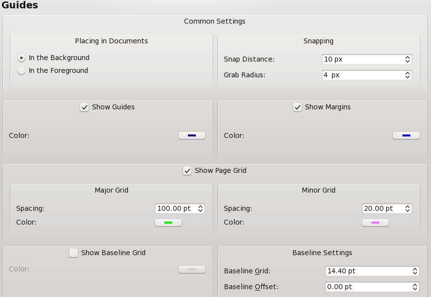 |
| By default, Guides and Margins will show, but can be changed here, along with the color of each. Major and Minor Grids do not show by default – here we have changed the default colors so you can easily see the difference in the screenshot to the right, with page edges shown in red, margins in blue, major grid light green, and minor grid in light magenta.
Finally, at the bottom of the dialog we can choose to show the Baseline Grid by default, and adjust its default settings. Find out more about the baseline grid in Working with Text. |
 |
Here are the default settings for various typographic features – subscript, superscript, automatic line spacing and scaling of small capitals.
In addition, the amount of automatic linespacing can be adjusted relative to the size of the font. Note that the 20% is in addition to the space required for the next line of text, so that the total space from one baseline to the next would be 120% of the font size.
| 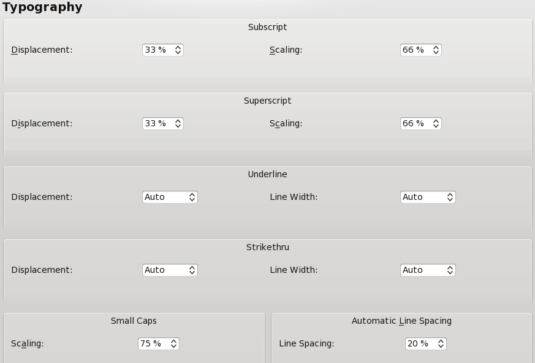 |
In the Tools tab you can change the defaults for text and image frames, shapes and polygons, and lines. In addition, there are page magnification settings, plus the defaults for duplication and rotation of objects.
 |
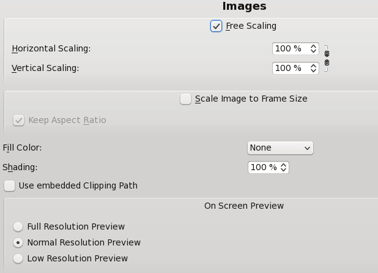 |
 |
 |
 | |
| 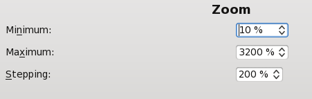 |  |
Hyphenation details are described here: Hyphenation in Scribus.
Selecting and installing fonts correctly is one of the most important configuration items with Scribus and an extensive set of notes is here: Fonts and Scribus. If there is one part of the documentation you really must read, it is this one.
| 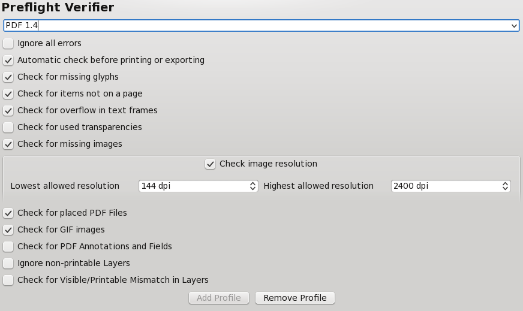 |
There are detailed notes on Color Management under Scribus and Creating a Monitor Profile with Littlecms. MacOSX and Windows users can use commercially available tools like Monaco's Color Tools, Eye-One, Adobe Gamma and Scribus can use them along side other color savvy applications. MacOSX users can use any of the profiles available to Color Sync. Scribus will automatically discover any system profiles installed.
| 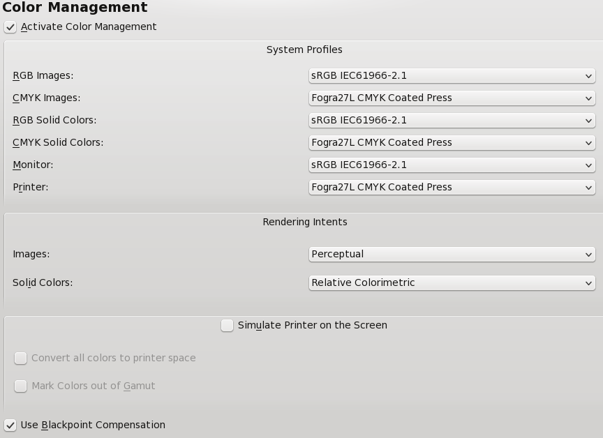 |
Note: You will not be able to export to PDF/X-3 if color management is not enabled, and the Preferences settings for this format will likewise not be available.
Remember that the settings here simply change the default values for PDF Export. You can still override any settings with the PDF Export dialog. For more info on PDF look at PDF Export Options and PDF/X-3 and Scribus.
 |
| New to 1.3.5+ versions is the inclusion of the ability to create bleeds, crop marks, and other printer marks as you export to PDF. Any bleed width is added to the page dimensions you selected when you created your document.
Note here an example of what you see when you do not have ICC profiles installed – PDF/X-3 Output Intent is not available. |
| 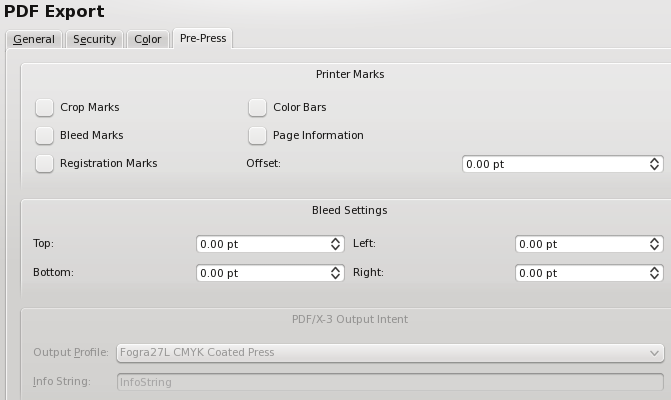 |
These two subdialogs relate to each other. One use of these features is explained here: http://wiki.scribus.net/index.php/Creating_a_Table_of_Contents
| 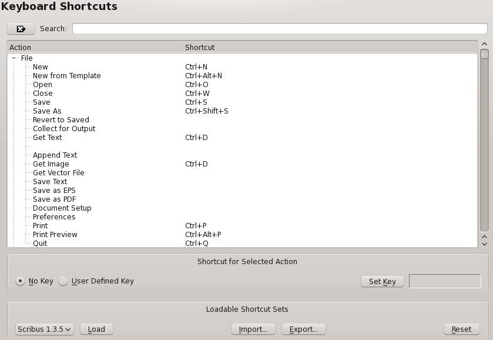 |
Here you see the various default keyboard shortcuts, which are editable, and many others can be assigned. These are stored in the .scribus/scribus135.rc file. Moreover, once customized, you can export them into a separate XML file which can be exported and saved separately, along with making it portable to other machines. The default file suffix is .ksxml. The XML is a unicode file and should not have issues being transported across platforms, with the only caveat that Macs have an option and command meta key, where Linux and Windows share common keyboards.
With scrapbooks, you can right button drag and drop frequently used items, including pictures, images and text files for quick placement. Scrapbooks can be saved with a file or independently of a document, as a separate scrapbook which can be loaded use with many different Documents. Separate scrapbooks are kept with a .scs designation. This panel sets the defaults for the thumbnail size in the scrapbook palette and if scrapbooks should be saved automatically when changed.
Most of these are pretty straightforward. Depending on the size of your screen, you can use this to adjust the rescale and rearrange your workspace. If you have plenty of space, you may want to adjust the display to accurately reflect your document size by default. Remember, you can adjust the magnification settings in Tools > Zoom.
| 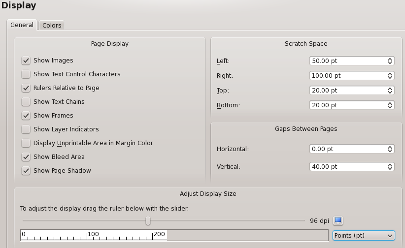 |
The Colors tab allows for customization of the colors used for various screen features, such as marking the margins, grids, and guides. In Document Settings only Fill Color is available. It's also worth mentioning here that the Fill Color only has to do with the appearance of the document background and is not printed or exported to PDF.
This panel enables you to change the default settings for the location of Ghostscript and your preferred image editing tool. If you have installed Ghostscript on Windows before installing Scribus, it is usually automatically detected.If you receive an error message on Windows indicating EPS files cannot be used. This is where the settings can be changed to allow Scribus to find the correct location of Ghostscript.
On Linux and Windows:
| 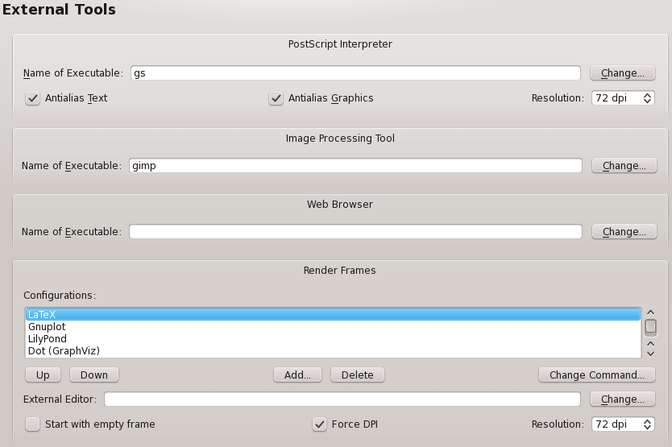 |
This particular screenshot comes from Linux, but Windows will have all of these same settings. If you do need to search for Ghostscript in Windows, the particular executable you need (for 32-bit) is named gswin32c.exe not gswin32.exe. Some additional information about Ghostscript can be found in Advanced Ghostscript.
You are not restricted to using Gimp for image editing, and could use any available image editor such as Cinepaint, Krita, or even Photoshop.
Although it was formerly necessary to close Gimp after editing, this is no longer necessary. If Gimp is already running, you will either need to close it to have the image file automatically loaded to Gimp, or get the file using Gimp's Open dialog.
On MacOSX
 |
Above are the recommended settings, provided you are using GIMP and/or if you have installed the Ghostscript.framework from http://aqua.scribus.net.
| 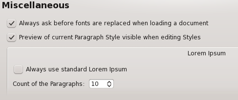 |
This is an informational display about the various plugins you have at your disposal, how to activate them, and where their libraries are located.
Short Words is a plug-in to assist adding non breaking spaces to short words like Mr. and measurements like km. It may not be immediately obvious, but there to two kinds of these spaces, placed either before (for something like kg) or after (for something like Mr.). Directly edit in this panel and save. Details on configuration and use are here: Short Words in Scribus.
Scripter Extensions are special scripter module or scripts which are loaded at startup to modify the abilities of the python scripter plug-in within Scribus. Details are here: Scripter Extensions Howto. The console tab is for choosing syntax highlighting colors within the scripter console.
Scribus' preferences are kept in a hidden directory .scribus. The location of which is as follows:
.scribus13.rc file, a scribusfont.rc file which preserves your font preferences and a prefs13.xml. These files are stored in XML format, so you can inspect its contents with a text editor. If you have installed the scripter plug-in, there will also be a scripter.rc file which lists most recently used scripts. There might also be several directories, which are configuration or history files. If you are troubleshooting starting Scribus, rename, do not delete these files and directories. If you rename the directory, on re-starting Scribus, the launch time will be somewhat longer, as Scribus creates a cache of installed fonts. On the second re-start of Scribus, it will be much quicker.